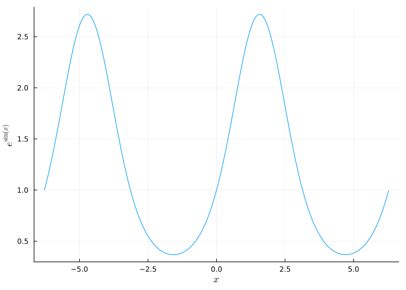
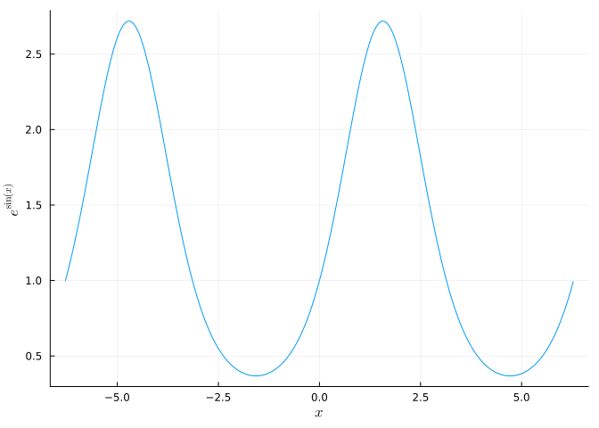

using Plots
using LaTeXStrings
x = -2π:0.01:2π
plot(x, exp.(sin.(x)), xlabel=L"$x$", ylabel=L"$e^{\sin(x)}$", legend=false)
This tutorial was inspired and draws from Justin Bois’ tutorial.
In this tutorial, you will learn how to typeset mathematics and equations in Jupyter notebooks using LaTeX.
To include mathematical notation within text, enclose the LaTeX within dollar signs $. For example, to obtain the output
the objective function is \(4x + 7x\),
you would enter
the objective function is $4x + 7x$.
You can enter subscripts and superscripts with _ and ^, respectively; to get
the function is \(f(x_i) = x_i^2\),
type
the function is
$f(x_i) = x_i^2$.
If you want multiple characters to be enclosed in a subscript or superscript, enclose them in braces {}:
\(e^{i \pi} - 1 = 0\) is produced by
$e^{i \pi} - 1 = 0$.
To get special characters like \(\pi\) (or other Greek letters), precede their name (or sometimes a code) with a backslash: $\pi$. There are a number of special characters like this, which you can find in cheatsheets like this one.
Bold characters, which you might use to denote vectors, can be rendered using \mathbf:
\(\mathbf{a} \cdot \mathbf{b} = \sum_{i=1}^n a_i \times b_i\)
$\mathbf{a} \cdot \mathbf{b} = \sum_{i=1}^n a_i \times b_i$
Fractions can be displayed using \frac{}{}, where the first bracket encloses the numerator and the second the denominator, as in
\(\frac{1}{2}\)
$\frac{1}{2}$
To place equations or other mathematics on their own line(s), enclose the entire block in two dollar signs $$. For example, the prior dot-product definition could be displayed as \[
\mathbf{a} \cdot \mathbf{b} = \sum_{i=1}^n a_i \times b_i
\] using
$$
\mathbf{a} \cdot \mathbf{b} = \sum_{i=1}^n a_i \times b_i
$$Displaying equations on their own line(s) can improve the spacing of symbols like sums (as above) or fractions: compare the inline
\(x < \frac{1}{2}\)
to \[ x < \frac{1}{2}. \]
To display multiple related lines in a single block, there are two environments of note. The first will center all of the equations, and is obtained by enclosing the equations in \begin{gather} and \end{gather}. Each line should be separated with \\:
\[ \begin{gather} x_1 + x_2 \leq 5 \\ y \leq \frac{1}{2}. \end{gather} \]
$$
\begin{gather}
x_1 + x_2 \leq 5 \\
y \leq \frac{1}{2}.
\end{gather}
$$The second environment will let you align the equations as you wish instead of automatically centering them, and is used by enclosing the equations with \begin{align} and \end{align}, with an ampersand & in front of the characters which will be used on each line to align the equations:
\[ \begin{align} x_1 + x_2 &\leq 5 \\ y &\leq \frac{1}{2}. \end{align} \]
$$
\begin{align}
x_1 + x_2 &\leq 5 \\
y &\leq \frac{1}{2}.
\end{align}
$$By default, parentheses and brackets are sized for simple characters, but will look bad when used to surround fractions or sums, particularly when they are not used in-line: \[
x_n = (\frac{1}{2})^n.
\] To make this look better, use \left and \right around the left and right parentheses or brackets: \[
x_n = \left(\frac{1}{2}\right)^n
\]
$$
x_n = \left(\frac{1}{2}\right)^n.
$$This is totally optional, but helps!
You may want to use LaTeX in figures, for example if your \(x\)-axis should have a title like \(x\). To do this, load the LaTeXStrings package and precede the relevant LaTeX-formatted string (within in-line dollar signs $) with L, as in:
using Plots
using LaTeXStrings
x = -2π:0.01:2π
plot(x, exp.(sin.(x)), xlabel=L"$x$", ylabel=L"$e^{\sin(x)}$", legend=false)